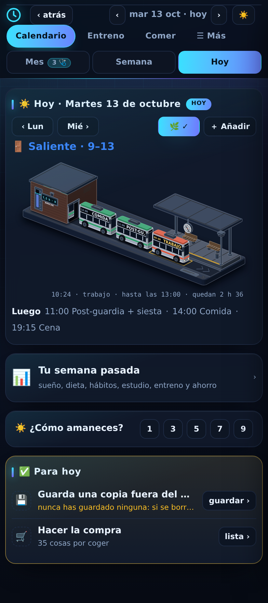
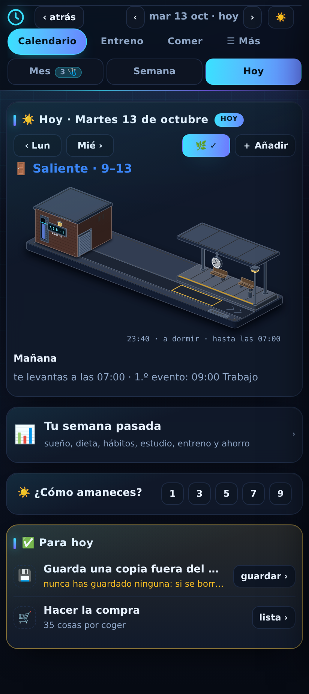

Antes

2 102 px: 2,3 pantallas.
Después · 10:24

925 px: cabe en una pantalla.
Después · 23:40

De noche, la cochera cerrada con el farol encendido.
Cada cosa del día es un autobús con su hora y su nombre. Hacen cola por orden de llegada: el del andén es lo que estás haciendo (letrero encendido) y los de detrás lo siguiente; cuando uno acaba sale por la derecha y la cola avanza. La cochera es la noche: por la mañana se abre y salen los autobuses; a tu hora de dormir entra el último y baja la puerta. En su fachada, lo que dormiste anoche frente a tu objetivo. Tocar un autobús abre su hoja de siempre; tocar la cochera abre Sueño. Debajo, una tira con «¿Cómo amaneces?» y «Para hoy».
Antes
2 102 px: 2,3 pantallas.
Después · 10:24

925 px: cabe en una pantalla.
Después · 23:40

De noche, la cochera cerrada con el farol encendido.
La estación, viva (arrastra para mover la hora · toca un autobús)